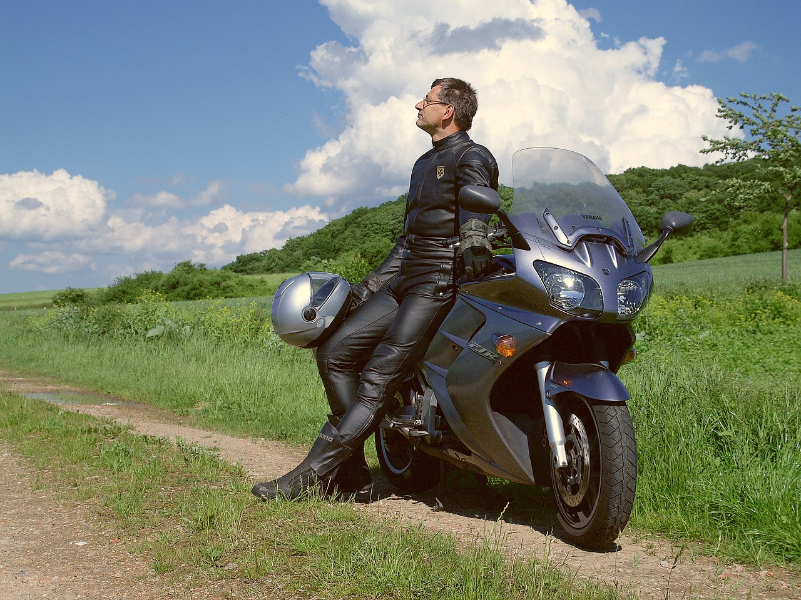
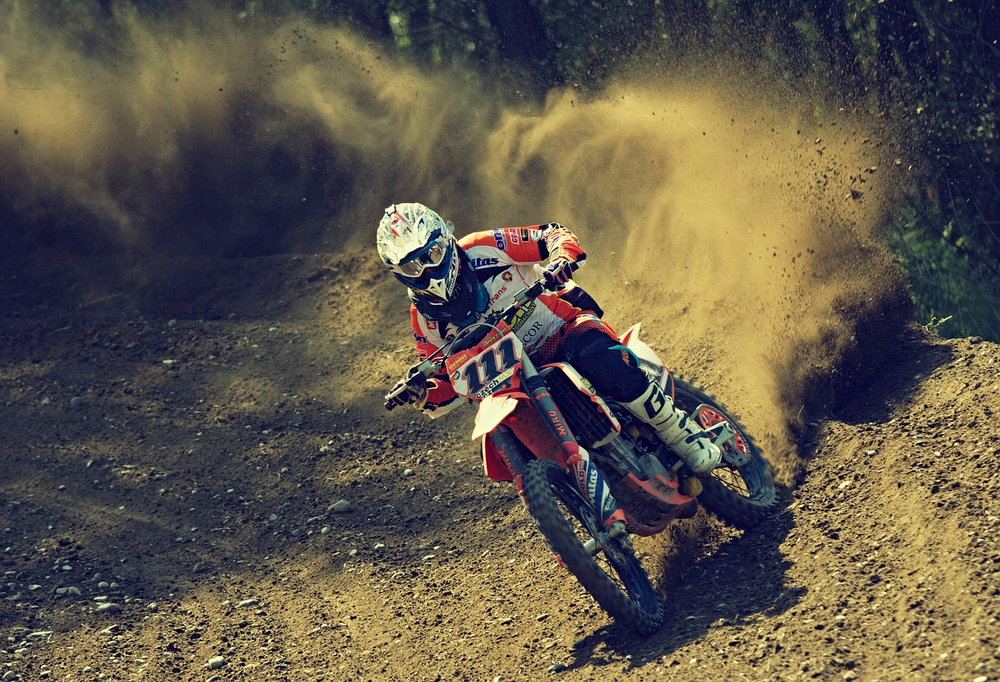
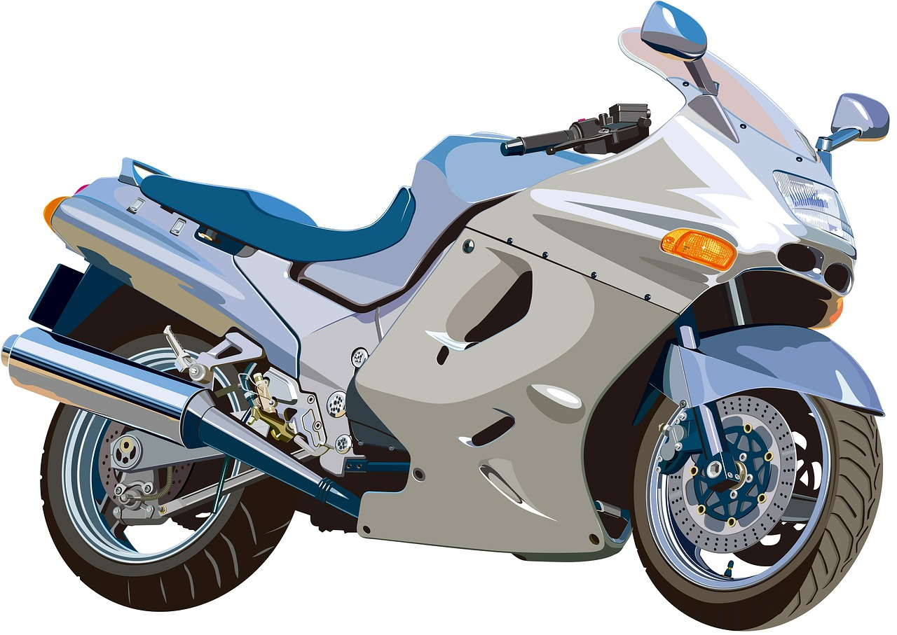
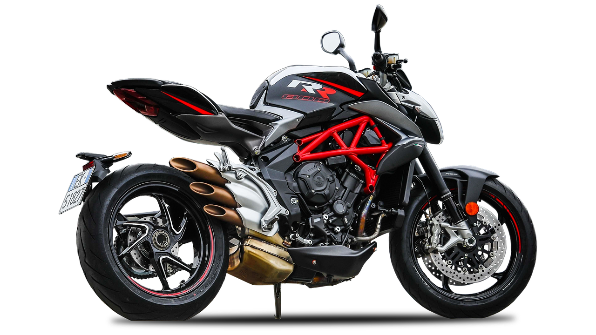
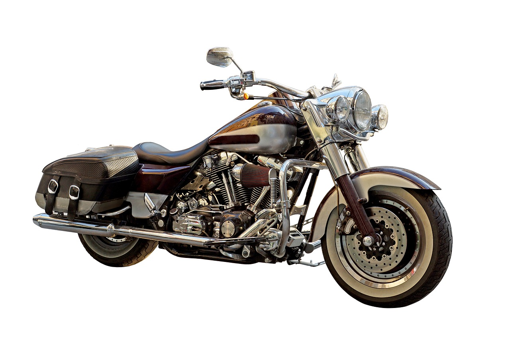
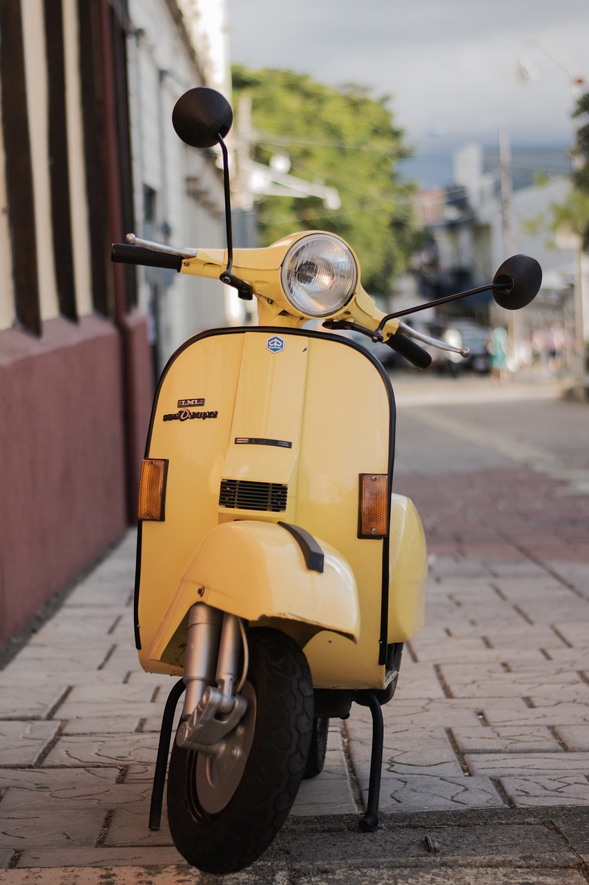

Als Fahranfänger ist es sehr wichtig den richtigen Motorradtypen auszuwählen. Je nachdem welche Bedürfnisse man hat, braucht man einen anderen Rahmen. Kleinere Fahrer sollten eher tiefliegende Motorräder kaufen, um Fahrmanöver zu vereinfachen. Grössere Fahrer sollten den Motorrad selbstverständlich auch anpassen. Es gibt grundsätzlich 6 Oberkategorien von Motorrädern. Diese sind:





